B2-G6｜昇街褶都：実3D検証
2026-10-23 / art/b / 実形状・実レンダー / 正式採用なし
異なる二構成と、失敗後の第三案
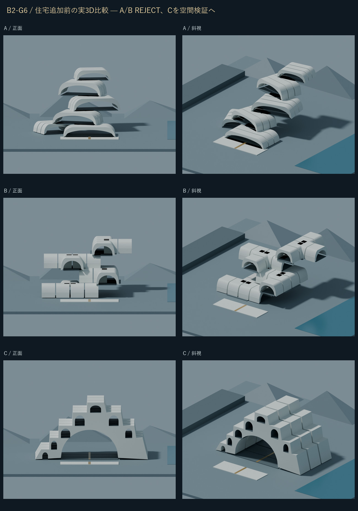
同じ主質量の制作前後
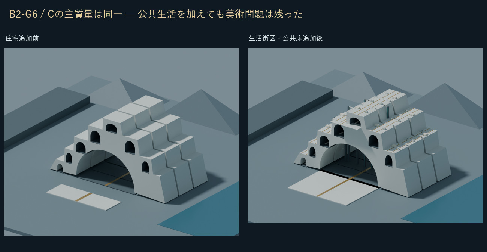
地上・高所・公共内部・中庭
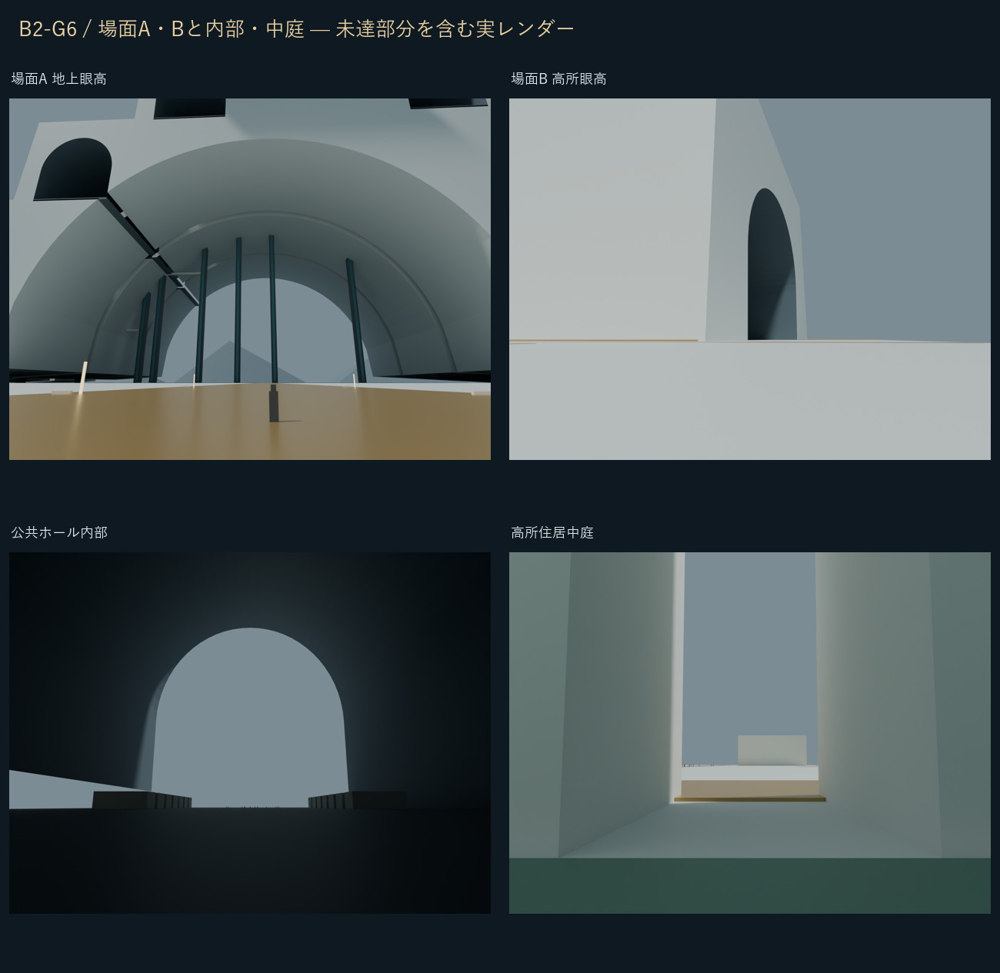
同一Cモデルからの全景・外部・眼高・断面
W0は概念背景のみ。M207/M204/M117座標の統合は行っていません。断面はX=0で一時的に東側を切除した派生表示です。
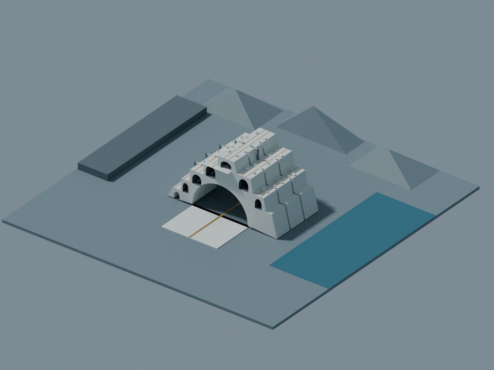
10km概念背景 — 実メッシュからのCyclesレンダー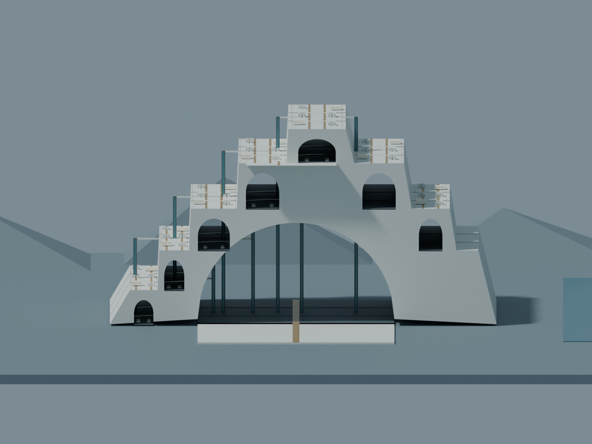
正面 — 実メッシュからのCyclesレンダー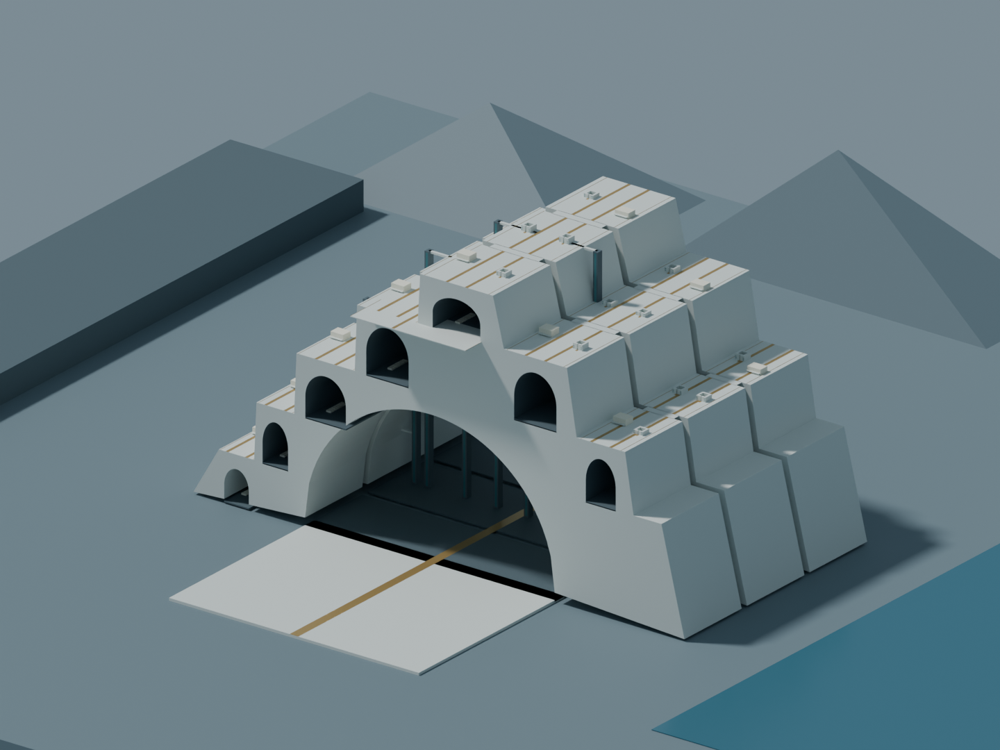
斜視 — 実メッシュからのCyclesレンダー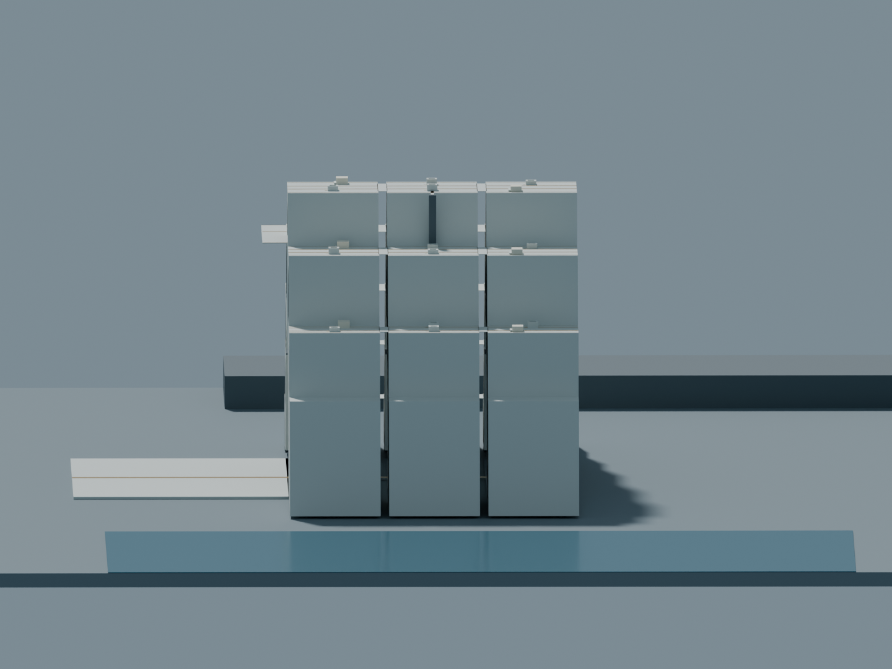
側面 — 実メッシュからのCyclesレンダー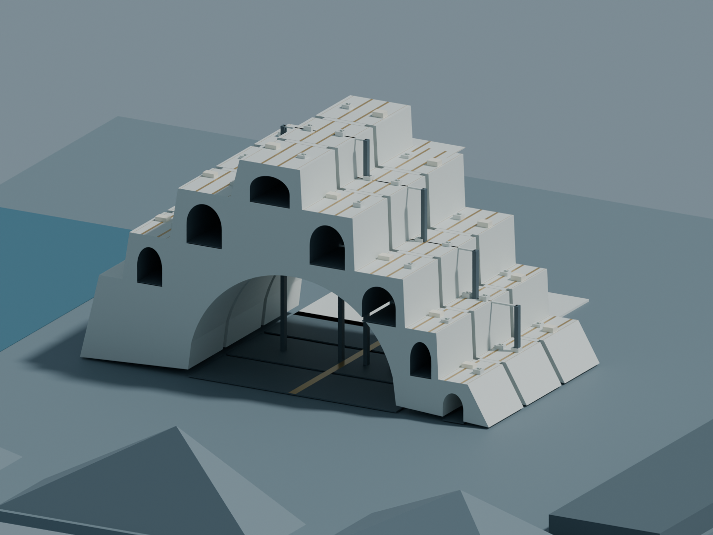
背面 — 実メッシュからのCyclesレンダー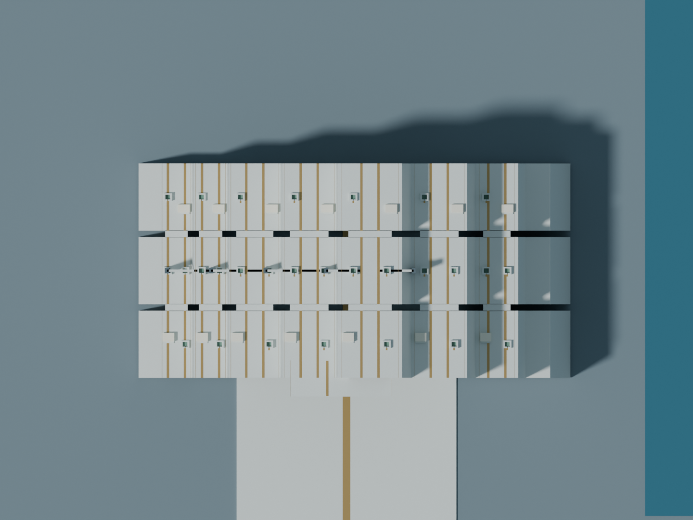
俯瞰 — 実メッシュからのCyclesレンダー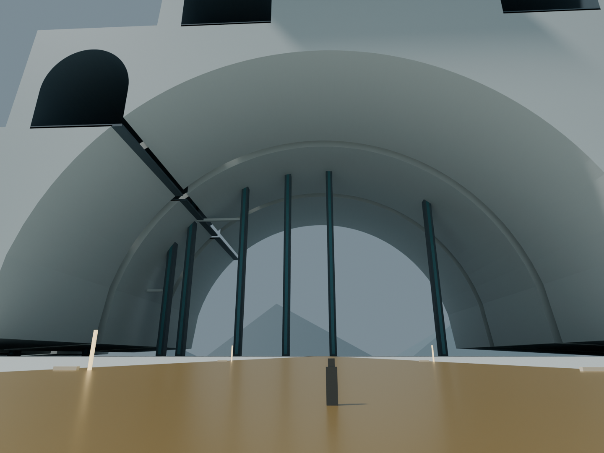
場面A 地上眼高 — 実メッシュからのCyclesレンダー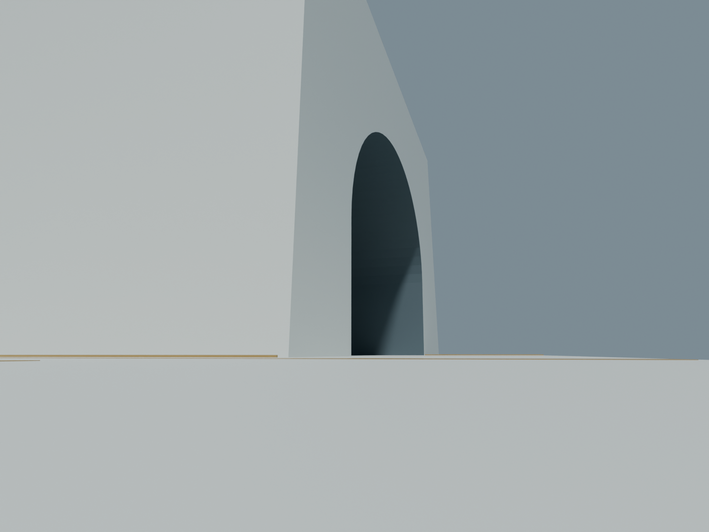
場面B 高所眼高 — 実メッシュからのCyclesレンダー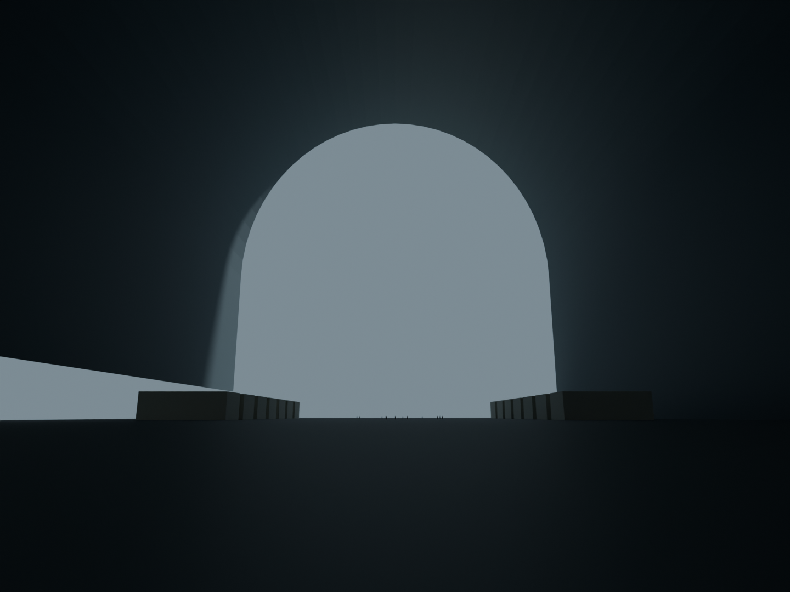
公共ホール内部 — 実メッシュからのCyclesレンダー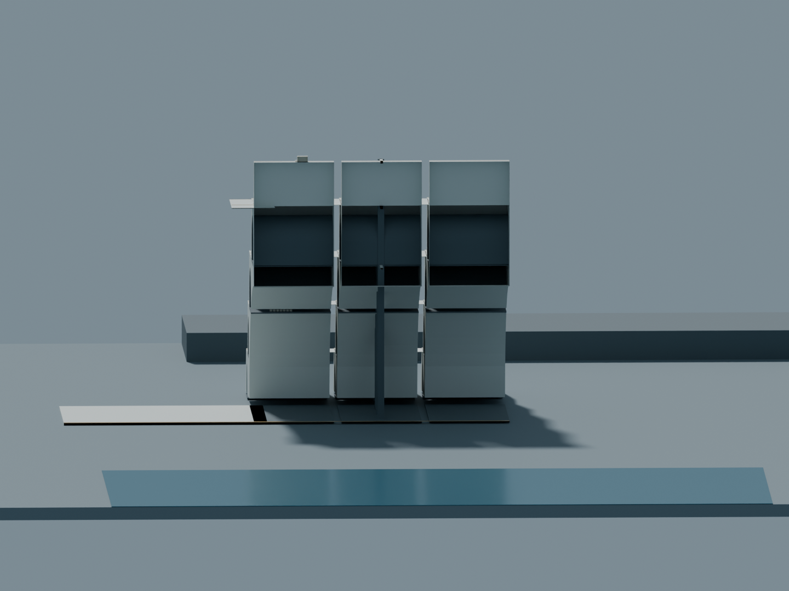
X=0断面 — 実メッシュからのCyclesレンダー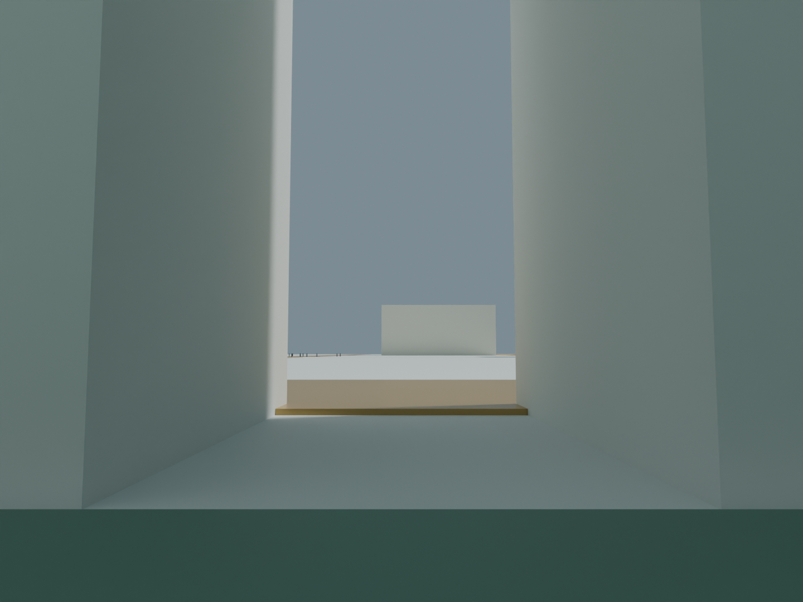
高所住居中庭 — 実メッシュからのCyclesレンダー原本と履歴
不採用A GLB / 不採用B GLB / マクロC GLB / Cの空間検証選抜記録 / 最終美術REJECT / 履歴 / 資産索引
正式M247-C・原本を保護。Minecraft施工HOLD。Work利用は事前承認制。構造・環境・住居内部・都市機能の成立は未検証です。